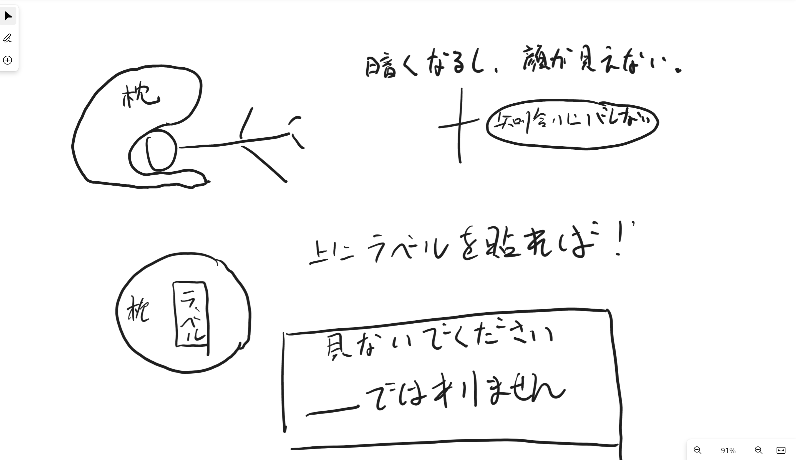
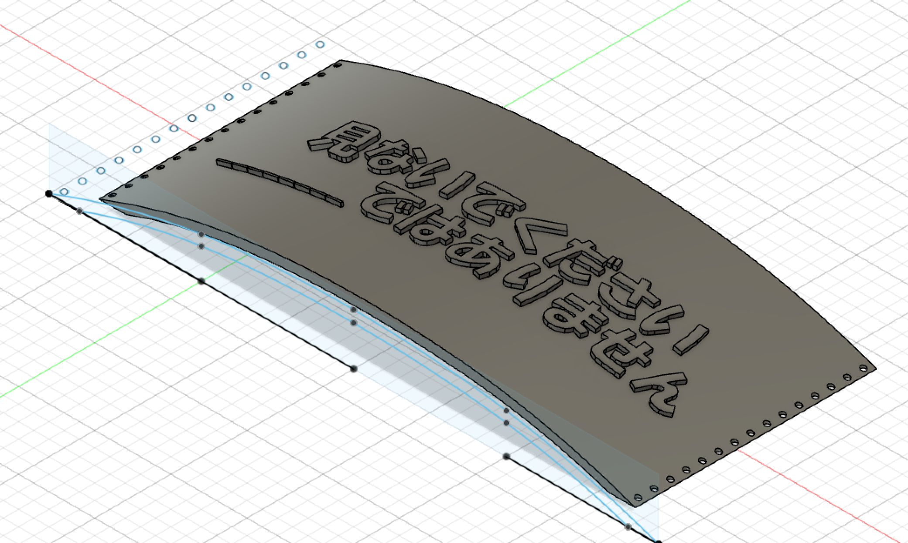

Design for Others スライム枕
アイデアとスケッチ
ラボでテーブルの下でうつぶせ寝でった先輩がいました。

三つの原因を考えた。
暗くて、寝やすい。
他の人に見えないように隠したいから。
うつぶせ寝った原因は、顔を知り合いに見せたくないから。
だから、顔を完全に囲まれた枕＋「見ない」ラベルを作りました。

スライム枕を作る過程と実際に使ったビデオはこちらになります
youtube